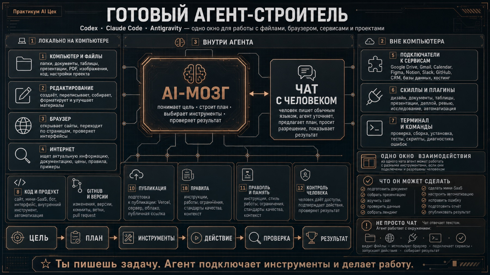
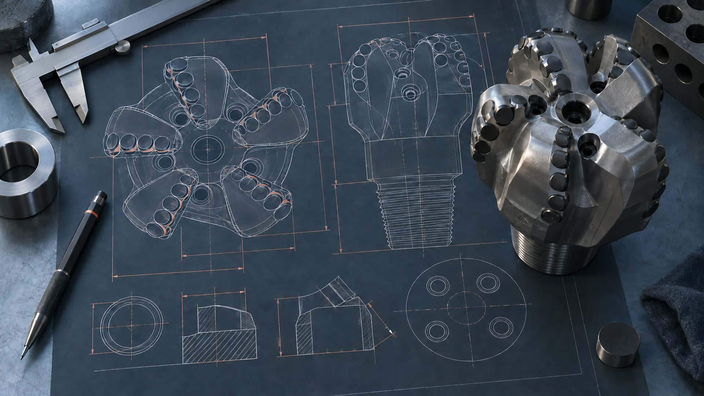
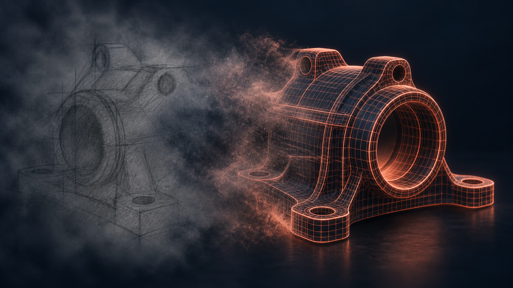
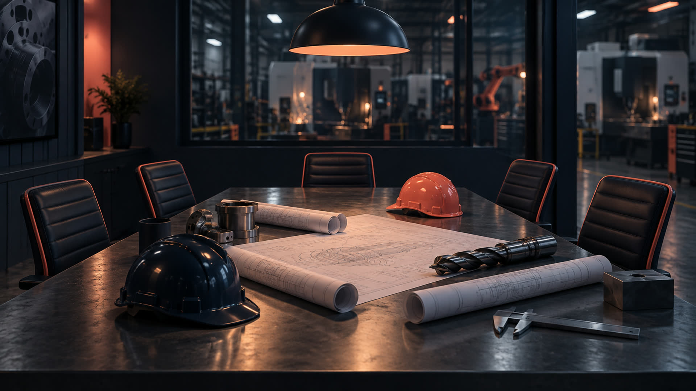
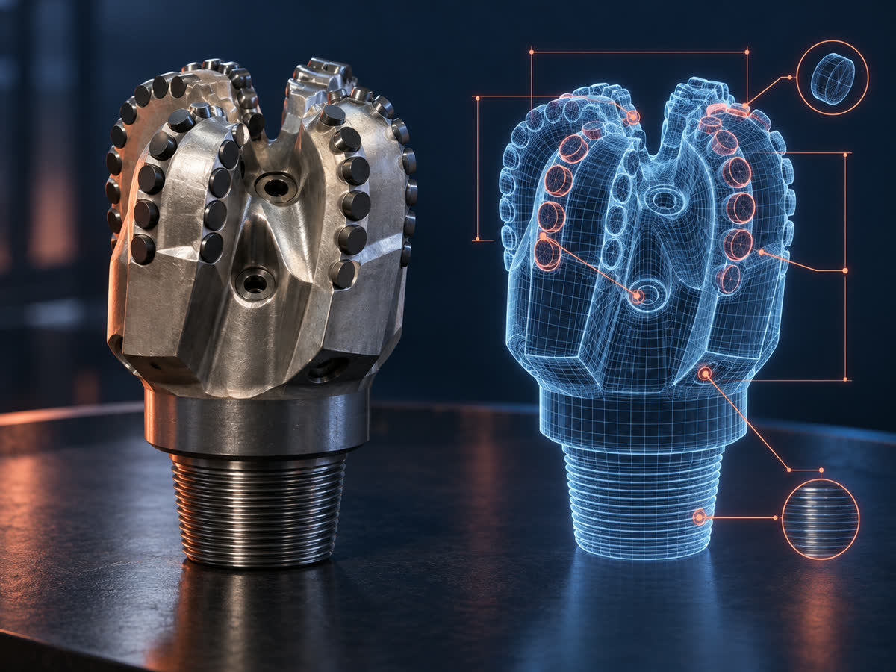

Персонализация
и промпт-инженерия
И начнёт понимать вас с первого раза.
Что я про вас понял
Расчёт и КП
Самая долгая и самая важная задача. Три расчёта из десяти с ошибками, если не проверить самим.
Чертежи и программы
Иностранные чертежи в дюймах и на английском. Управляющая программа: три дня работы технолога.
Рутина руководителя
Оперативки, задачи, переписка, презентации. То, что съедает день Дениса и вечер Михаила.
Чертежи под NDA
Главный вопрос встречи: чтобы ничего не ушло из контура. Сегодня начнём с правил, чем закончим на седьмом занятии.
От чата к агенту на заводе
ChatGPT как инструмент собственника и директора
Сегодня: персонализация и язык промптов. Дальше ассистенты под ваши участки, потом скиллы, плагины, проекты и запланированные задачи. Итог: рутина из одного окна.
Codex: агент на вашем компьютере
Окружение, папка, инструкции. Первые агенты под задачи завода: проверка калькуляции, перевод спецификаций, черновик управляющей программы, разбор вашей системы.
Безопасность и карта внедрения
Что можно в облако, что нет, закрытый контур и его цена. Интервью по процессам и карта: что автоматизируем, что оставляем людям, где окупается.
Что унесёте сегодня
Что такое ИИ
и как он устроен
Потом три мира моделей и лестница из пяти уровней, по которой пойдём восемь занятий.

Три мира нейросетей: Запад, Китай, Россия
Запад
ChatGPT самый сильный и универсальный
Claude лучший по текстам и документам
Gemini от Google, силён в таблицах и почте
Grok от команды Маска, живая лента
Китай
DeepSeek бесплатный и очень достойный
Qwen от Alibaba, хорош с файлами
Kimi держит огромные документы
Догнали Запад за полтора года
Россия
Алиса AI от Яндекса, самая массовая в стране
GigaChat от Сбера, свои модели
Отстают на шаг, но данные остаются в российском контуре
Пять уровней работы с ИИ
Три слова, которыми все бросаются
интеллект
модели
GPT: что это вообще значит
Порождающий
Не ищет готовый ответ в базе, а создаёт новый текст с нуля, слово за словом
Заранее обученный
Его обучили один раз на гигантском объёме текста. Дальше он просто пользуется тем, что усвоил
Трансформер
Схема из статьи Google 2017 года. Именно она научила машину держать смысл длинного текста
Четыре ступени: что модель умеет воспринимать
LLM
Большая языковая модель. Понимает и порождает текст. С этого всё началось и на этом стоит всё остальное
VLM
Плюс зрение. Видит картинки, фото, скриншоты, сканы. Наводите камеру и спрашиваете, что там
MLM
Мультимодальная. Ещё и звук, речь, видео. Слушает голос, смотрит запись встречи, отвечает голосом
Агент
Плюс руки. Не только понимает, но и действует: открывает, ищет, считает, сохраняет, отправляет
Ассистентный подход и агентный
Ассистентный. Это и есть LLM
Агентный. Это агенты
Из чего состоит языковая модель

Биг дата: на чём он вообще учился
Сколько это
Счёт идёт на петабайты. Если бы человек читал без перерыва всю жизнь, он осилил бы примерно одну стотысячную часть
Что он оттуда взял
Не сами тексты, а закономерности: как связаны слова и мысли, как выглядит хорошее письмо, чем вежливый отказ отличается от грубого
Датасет и веса, по-человечески
Датасет
Сырой интернет в модель не заливают. Сначала его чистят и раскладывают: убирают мусор, дубли, откровенную чушь, размечают, что есть что.
Датасет это отобранный учебник, по которому модель будет учиться. Каким его собрали, такой она и получится.
Параметры и веса
Внутри модели сотни миллиардов маленьких ручек-настроек. Каждая отвечает за крошечную связь между понятиями.
Обучение это подкрутка всех этих ручек, пока модель не начнёт угадывать продолжение. Настройки ручек и называются весами.
Почему он отвечает по-человечески
Он умеет уверенно ошибаться
Что происходит
Он подбирает правдоподобное продолжение. Если правдоподобно, но неправда, он всё равно это скажет. Тем же спокойным уверенным тоном
Что с этим делать
Цифры, даты, имена, ссылки и нормы проверяем всегда. Просим показать источник. Ответственность за результат остаётся на человеке
Китайская комната
И всё равно не понимает.

Как агент делает работу, по шагам
Модель в центре, вокруг неё руки

И ПАМЯТЬ

От эффективности к автономности
Не «вот вам тридцать программ», а движение по одной линии: от «я делаю быстрее» к «оно делается само».
Что можно загружать, а что нельзя
Зелёная. Можно смело
Открытые данные: ваш сайт и каталог, ГОСТы и ЕСКД, публичная информация о заказчиках, ваши черновики писем, общие вопросы по технологии.
Жёлтая. Сначала обезличить
Переписка без имён, калькуляция без заказчика и сумм, техпроцесс на «деталь 1», протокол оперативки без фамилий, спецификация без реквизитов.
Красная. Никогда
Чертежи заказчиков под NDA, ваши конструкторские разработки и патенты, персональные данные, отчётность, пароли, доступы к серверам.

Собираем ваш
личный контур
Через полчаса он знает про завод, про вашу роль и про то, чего делать не надо.
Рабочее место ChatGPT: шесть кнопок, и всё
«Чат» и «Работа»
Тумблер вверху окна. Сегодня живём в «Чате». «Работа» это Codex, туда идём с четвёртого занятия.
Новый чат
Новая задача равно новый чат. В длинном чате он путает ваши задачи между собой.
Скрепка
Файл, фото, скан, таблица, PDF. Помним про корзины: чертёж заказчика сюда не идёт.
Микрофон
Можно говорить, а не набирать. К концу занятия это станет основным способом.
Проекты
Папки под задачу со своей памятью и файлами. Разберём на втором занятии. Пока следите, чтобы новый чат создавался без проекта.
Модель и усилие
Справа в строке ввода. Для рабочих задач ставим старшую модель и усилие повыше: думает дольше, ошибается реже.
Инструкция качества
Куда: аватар → Настройки → Персонализация → поле «Как ChatGPT должен отвечать». Перевод инструкции на русский в шпаргалке.
Он сам возьмёт у вас интервью
Кладём досье туда, где он его не забудет
Проверяем, что он вас запомнил
Пересказал ваше досье
Значит всё встало. Он подтянул информацию сам, вы ему в этом чате ничего не говорили. Дальше он никогда не начнёт с вами с нуля.
Ответил общими словами
Досье не сохранилось. Вернитесь в Персонализацию, проверьте текст и переключатель. Вторая причина: новый чат открылся внутри проекта, у него своя память.
Теперь пусть он сам скажет, чем вам полезен
Вы не придумываете, где применить ИИ. Он придумывает это за вас, потому что уже знает вашу работу.
Берём задачу номер один
и закрываем её своими словами

Без ТЗ
результат ХЗ
ИИ работает ровно так же: что дали, то и получите.
Разница видна с первой строки

ИИ не читает мысли.
Он читает то, что вы дали
Вода в ответе это не его характер. Это отражение того, сколько вы ему сказали.
Пять элементов, из которых собирается любой рабочий запрос
Минимум, который уже работает:
Роль + Задача + Формат
Когда на кону деньги, срок или подпись живого человека: КП, ответ заказчику, расчёт, письмо в материнскую компанию. Пять минут на формулировку дешевле, чем неправильная цена в КП.
Так выглядит промпт, после которого не переделывают
Шаблон, который лежит в шпаргалке
Берём и пользуемся сегодня
Те же пять букв, другая задача
Двенадцать готовых промптов лежат в шпаргалке
Соберите промпт по формуле

Пусть он спросит раньше,
чем начнёт писать
Пусть он спросит вас первым

Совет экспертов
в пять ходов
Если из двух часов у вас останется одно, пусть останется этот приём.
На вопрос «оцени решение» он отвечает усреднённо
Технолог
Видит, на каком станке это не сделать и где вылезет брак.
Экономист
Видит рентабельность партии и цену этого решения через квартал.
Безопасник
Видит, где нарушите NDA и где окажетесь виноваты перед заказчиком.
Скептик
Видит, где вы себя обманываете. Обычно самый полезный из четырёх.
Первое сообщение · в том же чате, ничего не переписываем
Одна строка, которая переворачивает разбор
И часто именно эта роль ломает всю прежнюю логику.
Разбор по фактам, а не по вежливости
Отдельным ходом, а не заодно
Собирает всё в одну готовую версию
На выходе не «мнение нейросети», а протокол сомнений: список того, что стоит проверить до подписи.
Три вариации и пять ошибок
Роли выбраны наугад. Берите тех, кто в жизни действительно завернёт вашу бумагу.
Нет контекста. Пять экспертов без фактов дадут пять банальностей.
Больше семи ролей. Начинается каша, оптимум четыре или пять.
Все эксперты «за». Значит вы не заказали скептика.
Совет вызвали после решения. Ценность приёма только «до».
Прогоните свой ответ через пять ходов
И финальный ход той же цепочки:
одна работа, несколько адресатов
Одно сообщение, и вечер переписывания под заказчика, под мастера участка и под материнскую компанию закрывается сразу.
Один текст, три читателя
Понравилось чужое?
Забираем целиком

Десять образцов, из которых можно вытащить промпт
КП конкурента
Структура блоков, как подан оффер и цена, чем снимают страхи
Техспецификация
Та, что заказчик принял без вопросов: состав, порядок, уровень деталей
Удачное письмо
После которого договорились: заход, просьба, как снят страх
Переписка с заказчиком
За год: как отвечали на «дорого» и на «срочно»
Презентация завода
Драматургия, палитра, сколько текста на слайде
Калькуляция
Ваша лучшая: логика строк, что учтено, что вынесено отдельно
Договор
Разделы, формулировки, баланс сторон. На выходе промпт под черновик
Отчёт наверх
Тот, что приняли без правок: состав, глубина, как поданы плохие новости
Свой голос
Свои сообщения: как вы заходите, как закрываете, чего никогда не пишете
Картинка
Стиль, свет, палитра, композиция. Промпт придёт на русском и английском
Четыре шага, и промпт ваш навсегда
Вытащите промпт из чужого образца
Там, где есть расчёт,
заставьте его показать ход мысли
Проверка калькуляции. Выбор между поставщиками материала. Сравнение двух вариантов техпроцесса. Окупаемость станка под новый участок. Любой вопрос, где ответ это число, а не текст.
Большая задача разваливается,
если просить её целиком
Вы видите план раньше результата и правите его, пока это дёшево. Ошибка на первом шаге не тянет за собой всю работу. И каждый кусок можно проверить, пока он ещё небольшой.
Двенадцать фраз, которые чинят почти всё
Пока вы не сказали, в каком виде,
он выбирает сам
По умолчанию он вам поддакивает

Один пример «как надо» сильнее,
чем три страницы объяснений
Второе работает лучше и занимает десять секунд.
Он помнит не всё и не вечно. И правило одного круга
Не пишите промпт.
Расскажите задачу голосом
Теперь формулу вы знаете, значит увидите, если он соберёт промпт мимо задачи. С этого момента можно работать только так.
Говорите как получится. Соберёт он
Наговорите задачу и ничего не пишите
Что унесли сегодня
Три захода по двадцать минут
Сегодня
Досье и инструкция стоят у обоих, проверено в новом чате. Формула на трёх своих задачах из тех, что лежат на столе.
Завтра
Одно висящее решение через совет экспертов в пять ходов. Плюс один готовый промпт из чужого образца: КП, письмо или спецификация.
Послезавтра
Весь день только голосом. И список: три задачи, которые хочется отдать постоянному помощнику. Это заготовка для второго занятия про ассистентов.
Ассистенты.
Из чата: своя ИИ-команда
Дальше соберём из этого постоянных помощников: разбор запроса заказчика, переводчик спецификаций, протокол оперативки, проверяльщик калькуляции.